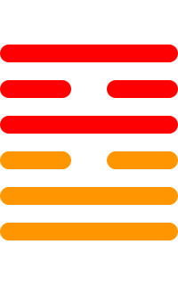

第三十八卦
睽卦

卦辞
小事吉。
睽卦象征睽违、背离与乖异。卦辞意为：小事吉祥。睽卦教导我们在意见不合时要处理小的分歧，寻求和解。
彖传
睽，火动而上，泽动而下。二女同居，其志不同行。说而丽乎明，柔进而上行，得中而应乎刚，是以小事吉。天地睽而其事同也，男女睽而其志通也，万物睽而其事类也。睽之时用大矣哉。
彖传说：睽，火动而上，泽动而下。二女同居，其志不同行。悦而丽乎明，柔进而上行，得中而应乎刚，是以小事吉。天地睽而其事同也，男女睽而其志通也，万物睽而其事类也。睽的时用很大啊。
象传
上火下泽，睽。君子以同而异。
象传说：上火下泽，就是睽卦。君子应当效法这种精神，求同存异。火在上泽在下象征分离，要在差异中寻求和谐。
爻辞
初九：悔亡。丧马勿逐，自复。见恶人，无咎
悔恨消亡。丧马不要追，自会回来。见恶人，没有灾害。
初九爻位于最下方，无求自得。悔恨消亡。丢失的马不要追逐，自己会回来。见到恶人，没有灾害，表示顺其自然。
九二：遇主于巷，无咎
遇主于巷，没有灾害。
九二爻得中得正，巧遇。在巷中遇到主人，没有灾害，表示意外的相遇。
六三：见舆曳，其牛掣，其人天且劓，无初有终
见舆曳，其牛掣，其人天且劓，无初有终。
六三爻位置不当，受阻。看见车子被拖拽，牛被牵制，人受刑罚，没有开始但有结果，表示虽有困难终会成功。
九四：睽孤，遇元夫，交孚，厉无咎
睽孤，遇元夫，交孚，危险无灾害。
九四爻接近君位，孤立。睽违孤立，遇到大丈夫，交往诚信，危险无灾害，表示找到知己。
六五：悔亡。厥宗噬肤，往何咎
悔恨消亡。其宗噬肤，前往何灾害。
六五爻居中尊位，和解。悔恨消亡。宗族咬肉，前往有什么灾害，表示能够和解。
上九：睽孤，见豕负涂，载鬼一车，先张之弧，后说之弧，匪寇婚媾，往遇雨则吉
睽孤，见豕负涂，载鬼一车，先张之弧，后说之弧，匪寇婚媾，往遇雨则吉祥。
上九爻位于极点，误会解除。睽违孤立，见猪负泥，载鬼一车，先张弓后脱弓，不是盗寇是婚姻，前往遇雨则吉祥。